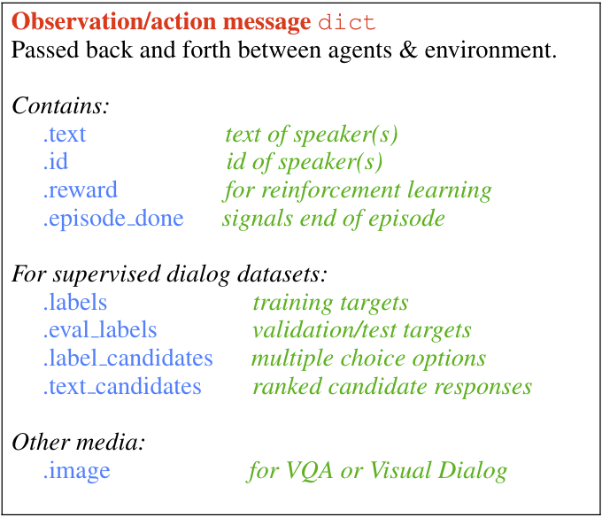

observations¶
{kind=link}
The primary medium for information flow (messages between agents and the environment)
in ParlAI is a python dict containing the actions of an agent
(observable by other agents or the environment).
We generally refer to this as an observation dict.
One should be created by an agent’s act() function, and it will be passed
to another agent’s observe() function as the sole argument.
In general, fields are optional when creating your own task. However, there are a number of standard fields that are common and should be used when the appropriate type of data is being sent to the model. This allows models trained on one dataset to easily train on a different task or even to multi-task.
If necessary, teachers can include other data in this dict using other field names. See extended fields below.
text¶
This is the most standard field of the observation dict.
This contains a string with the text being sent from one agent to others.
id¶
This field can contain the self-identification string of the sender.
For example, we have tasks specify their task name using this field
(“–task squad” will send messages with the id “squad”).
labels¶
When available (ie when doing supervised learning), this field will contain
any appropriate labels. For many tasks, this will be only a single response.
However, some datasets do support multiple correct answers, so this field
should be an iterable (e.g. a list, a tuple).
eval_labels¶
During validation and testing, the “labels” field is moved to “eval_labels” in order to help prevent accidentaly training on evaluation data.
However, by providing this field, models can still compute model-side metrics such as perplexity.
label_candidates¶
For tasks that support ranking, this field is an iterable of
possible answers the dataset is suggesting the agent could choose from.
For example, the “mnist-qa” task provides the following label_candidates:
def label_candidates(self):
return [str(x) for x in range(10)] + ['zero', 'one', 'two', 'three', 'four', 'five', 'six', 'seven', 'eight', 'nine']
text_candidates¶
This is the partner field to “label_candidates”. In response to received
candidates for the label, the model can choose to return an iterable
of responses in the order it would rank their relevance to the conversation.
This allows the teacher to grade the model’s entire ordering, giving the option
to compute metrics like hits@10 or MRR.
episode_done¶
The “episode_done” flag is used to mark the end of an episode. Conversations in ParlAI don’t necesarily have more than one exchange, but many datasets do.
For example, the WikiMovies dataset only has one:
{
'id': 'wikimovies',
'text': 'what movies are about ginger rogers?',
'labels': ['Top Hat', 'Kitty Foyle', 'The Barkleys of Broadway'],
episode_done=True,
}
On the other hand, the bAbI tasks have multiple exchanges per conversation:
{
'id': 'babi:task1k:15',
'text': '''Cats are afraid of sheep.
Sheep are afraid of mice.
Wolves are afraid of sheep.
Gertrude is a cat.
Winona is a cat.
Emily is a sheep.
Jessica is a cat.
Mice are afraid of cats.
What is winona afraid of?''',
'labels': ['sheep'],
'label_candidates': ['wolf', 'mouse', 'cat', 'sheep'],
episode_done=False,
}
{
'id': 'babi:task1k:15',
'text': 'What is jessica afraid of?',
'labels': ['sheep'],
'label_candidates': ['wolf', 'mouse', 'cat', 'sheep'],
episode_done=False,
}
{
'id': 'babi:task1k:15',
'text': 'What is gertrude afraid of?',
'labels': ['sheep'],
'label_candidates': ['wolf', 'mouse', 'cat', 'sheep'],
episode_done=False,
}
{
'id': 'babi:task1k:15',
'text': 'What is emily afraid of?',
'labels': ['mouse'],
'label_candidates': ['wolf', 'mouse', 'cat', 'sheep'],
episode_done=True,
}
reward¶
This field can be used by reinforcement-learning tasks to send rewards in the observation dict.
image¶
Observation dicts may also include images. For example, the VQA_v2 dataset contains questions about images. The “image” field will contain the image data in whichever format the image mode parameters are set to.
By default, images are returned as their raw RBG pixels. They can also be processed by a pre-trained image model and just features of from the model will be in the image field, or even converted into a text representation for quick debugging.
Here is an example of using the ascii image mode:
python examples/display_data.py -t mnist_qa --image-mode ascii
{
'text': 'Which number is in the image?',
'labels': ['4', 'four'],
'label_candidates': ['0', '1', '2', '3', '4', '5', '6', '7', '8', '9',
'zero', 'one', 'two', 'three', 'four',
'five', 'six', 'seven', 'eight', 'nine'],
'episode_done': True,
'image': '''@@@@@@@@@@@@@@@@@@@@@@@@@@@@
@@@@@@@@@@@@@@@@@@@@@@@@@@@@
@@@@@@@@@@@@@@@@@@@@@@@@@@@@
@@@@@@@@@@@@@@@@@@@@@@@@@@@@
@@@@@@@@@@@@@@@@@@@@@@;;@@@@
@@@@@@@@@@@@@@@@@@@@@s s@@@@
@@@@@@@@@@@@@@@@@@@@A H@@@@
@@@@@@@@@@@@@@@@@@@@; ;@@@@@
@@@@@@@@@@@@#;&@@@@H ,9@@@@@
@@@@@@@@@@@@, #@@@@, H@@@@@@
@@@@@@@@@@@@, G@@@9 H@@@@@@
@@@@@@@@@@@A ,&@@@c :@@@@@@@
@@@@@@@@@@8 #@@@s .@@@@@@@@
@@@@@@@@@9. s@@@2 3@@@@@@@@
@@@@@@@@h :2@&: r@@@@@@@@@
@@@@@@@h , :. @@@@@@@@@@
@@@@@@H G9; .8@@@@@@@@
@@@@@@;.h@@@9: r@@@@@@@@@
@@@@@@38@@@@# H99&@@@@@@@@@
@@@@@@@@@@@&s .@@@@@@@@@@@@@
@@@@@@@@@@@2 8@@@@@@@@@@@@@
@@@@@@@@@@8. A@@@@@@@@@@@@@@
@@@@@@@@@@. r@@@@@@@@@@@@@@@
@@@@@@@@@@2 H@@@@@@@@@@@@@@@
@@@@@@@@@@@@@@@@@@@@@@@@@@@@
@@@@@@@@@@@@@@@@@@@@@@@@@@@@
@@@@@@@@@@@@@@@@@@@@@@@@@@@@
@@@@@@@@@@@@@@@@@@@@@@@@@@@@'''
}
extended fields¶
A number of datasets will use their own fields to specify additional metadata.
For example, the “squad:index” task also includes the starting index of the answer in the text (in characters).
{
'id': 'squad',
'text': '''Architecturally, the school has a Catholic character.
Atop the Main Building\'s gold dome is a golden statue of the Virgin Mary.
Immediately in front of the Main Building and facing it,
is a copper statue of Christ with arms upraised with the legend
"Venite Ad Me Omnes". Next to the Main Building is the Basilica
of the Sacred Heart. Immediately behind the basilica is the Grotto,
a Marian place of prayer and reflection. It is a replica of the
grotto at Lourdes, France where the Virgin Mary reputedly
appeared to Saint Bernadette Soubirous in 1858.
At the end of the main drive (and in a direct line that connects
through 3 statues and the Gold Dome), is a simple,
modern stone statue of Mary.
To whom did the Virgin Mary allegedly appear in 1858 in Lourdes France?''',
'labels': ['Saint Bernadette Soubirous'],
'episode_done': True,
'answer_starts': [515]
}
You can add additional fields to provide task-specific metadata. However, note that
models trained on specific fields won’t easily transfer to other tasks
none of the existing models will take advantage of that field
multitasking on different tasks will be more difficult to implement
For example, the default SQuAD task for ParlAI does not include the “answer_starts”, and we include a model (DrQA) which has the functionality to find the index of the labels on its own. This allows that agent to also be trained on different tasks which contain the answer in the introductory text (such as some bAbI tasks) which do not provide “answer_starts”.